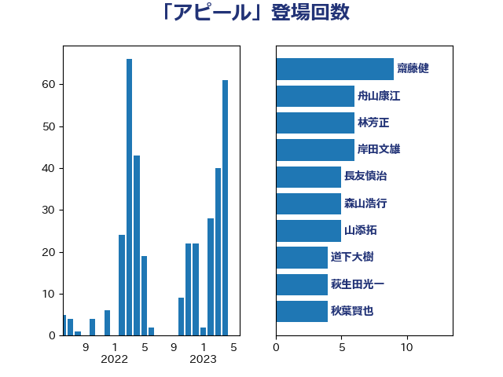

単語「アピール」

| 齋藤健 | 自由民主党 | 9 回 |
| 舟山康江 | 国民民主党 | 6 回 |
| 林芳正 | 自由民主党 | 6 回 |
| 岸田文雄 | 自由民主党 | 6 回 |
| 長友慎治 | 国民民主党 | 5 回 |
| 森山浩行 | 立憲民主党 | 5 回 |
| 山添拓 | 日本共産党 | 5 回 |
| 道下大樹 | 立憲民主党 | 4 回 |
| 萩生田光一 | 自由民主党 | 4 回 |
| 秋葉賢也 | 自由民主党 | 4 回 |
| 漆間譲司 | 日本維新の会 | 4 回 |
| 沢田良 | 日本維新の会 | 4 回 |
| 池畑浩太朗 | 日本維新の会 | 4 回 |
| 横山信一 | 公明党 | 4 回 |
| 榛葉賀津也 | 国民民主党 | 4 回 |
| 大島敦 | 立憲民主党 | 4 回 |
| 大口善徳 | 公明党 | 4 回 |
| 堤かなめ | 立憲民主党 | 4 回 |
| 佐藤公治 | 立憲民主党 | 4 回 |
| 下野六太 | 公明党 | 4 回 |
| 上野通子 | 自由民主党 | 4 回 |
| ながえ孝子 | 無所属 | 4 回 |
| 鈴木義弘 | 国民民主党 | 3 回 |
| 菅家一郎 | 自由民主党 | 3 回 |
| 若宮健嗣 | 自由民主党 | 3 回 |
| 田村智子 | 日本共産党 | 3 回 |
| 渡辺創 | 立憲民主党 | 3 回 |
| 浜口誠 | 国民民主党 | 3 回 |
| 河西宏一 | 公明党 | 3 回 |
| 柳本顕 | 自由民主党 | 3 回 |
| 岡田直樹 | 自由民主党 | 3 回 |
| 山口壯 | 自由民主党 | 3 回 |
| 上田清司 | 国民民主党 | 3 回 |
| 音喜多駿 | 日本維新の会 | 2 回 |
| 鈴木貴子 | 自由民主党 | 2 回 |
| 鈴木敦 | 国民民主党 | 2 回 |
| 金村龍那 | 日本維新の会 | 2 回 |
| 野村哲郎 | 自由民主党 | 2 回 |
| 西村康稔 | 自由民主党 | 2 回 |
| 菊田真紀子 | 立憲民主党 | 2 回 |
| 芳賀道也 | 国民民主党 | 2 回 |
| 笠井亮 | 日本共産党 | 2 回 |
| 福島伸享 | 無所属 | 2 回 |
| 礒崎哲史 | 国民民主党 | 2 回 |
| 石井苗子 | 日本維新の会 | 2 回 |
| 田村貴昭 | 日本共産党 | 2 回 |
| 田中健 | 国民民主党 | 2 回 |
| 清水貴之 | 日本維新の会 | 2 回 |
| 浜地雅一 | 公明党 | 2 回 |
| 浅野哲 | 国民民主党 | 2 回 |
| 浅田均 | 日本維新の会 | 2 回 |
| 永井学 | 自由民主党 | 2 回 |
| 梅村みずほ | 日本維新の会 | 2 回 |
| 柴田巧 | 日本維新の会 | 2 回 |
| 松原仁 | 立憲民主党 | 2 回 |
| 杉尾秀哉 | 立憲民主党 | 2 回 |
| 斉藤鉄夫 | 公明党 | 2 回 |
| 徳永久志 | 立憲民主党 | 2 回 |
| 徳永エリ | 立憲民主党 | 2 回 |
| 川崎ひでと | 自由民主党 | 2 回 |
| 川合孝典 | 国民民主党 | 2 回 |
| 山田勝彦 | 立憲民主党 | 2 回 |
| 山本剛正 | 日本維新の会 | 2 回 |
| 山本佐知子 | 自由民主党 | 2 回 |
| 山岸一生 | 立憲民主党 | 2 回 |
| 和田有一朗 | 日本維新の会 | 2 回 |
| 吉田久美子 | 公明党 | 2 回 |
| 務台俊介 | 自由民主党 | 2 回 |
| 井林辰憲 | 自由民主党 | 2 回 |
| 中川正春 | 立憲民主党 | 2 回 |
| 中川康洋 | 公明党 | 2 回 |
| 高良鉄美 | 無所属 | 1 回 |
| 高橋光男 | 公明党 | 1 回 |
| 須藤元気 | 無所属 | 1 回 |
| 長妻昭 | 立憲民主党 | 1 回 |
| 鈴木庸介 | 立憲民主党 | 1 回 |
| 金子俊平 | 自由民主党 | 1 回 |
| 野田国義 | 立憲民主党 | 1 回 |
| 野上浩太郎 | 自由民主党 | 1 回 |
| 遠藤良太 | 日本維新の会 | 1 回 |
| 遠藤敬 | 日本維新の会 | 1 回 |
| 進藤金日子 | 自由民主党 | 1 回 |
| 足立康史 | 日本維新の会 | 1 回 |
| 赤木正幸 | 日本維新の会 | 1 回 |
| 谷田川元 | 立憲民主党 | 1 回 |
| 谷合正明 | 公明党 | 1 回 |
| 若松謙維 | 公明党 | 1 回 |
| 緒方林太郎 | 無所属 | 1 回 |
| 紙智子 | 日本共産党 | 1 回 |
| 米山隆一 | 立憲民主党 | 1 回 |
| 篠原豪 | 立憲民主党 | 1 回 |
| 竹内真二 | 公明党 | 1 回 |
| 空本誠喜 | 日本維新の会 | 1 回 |
| 穂坂泰 | 自由民主党 | 1 回 |
| 稲津久 | 公明党 | 1 回 |
| 福島みずほ | 社会民主党 | 1 回 |
| 神谷宗幣 | 参政党 | 1 回 |
| 神津たけし | 立憲民主党 | 1 回 |
| 石田昌宏 | 自由民主党 | 1 回 |
| 石川香織 | 立憲民主党 | 1 回 |
| 石川大我 | 立憲民主党 | 1 回 |
| 石川博崇 | 公明党 | 1 回 |
| 石原正敬 | 自由民主党 | 1 回 |
| 石井章 | 日本維新の会 | 1 回 |
| 石井正弘 | 自由民主党 | 1 回 |
| 田村まみ | 国民民主党 | 1 回 |
| 玄葉光一郎 | 立憲民主党 | 1 回 |
| 牧山ひろえ | 立憲民主党 | 1 回 |
| 浜田靖一 | 自由民主党 | 1 回 |
| 水岡俊一 | 立憲民主党 | 1 回 |
| 櫛渕万里 | れいわ新選組 | 1 回 |
| 森本真治 | 立憲民主党 | 1 回 |
| 柳ヶ瀬裕文 | 日本維新の会 | 1 回 |
| 柚木道義 | 立憲民主党 | 1 回 |
| 枝野幸男 | 立憲民主党 | 1 回 |
| 松本尚 | 自由民主党 | 1 回 |
| 松島みどり | 自由民主党 | 1 回 |
| 杉田水脈 | 自由民主党 | 1 回 |
| 早稲田ゆき | 立憲民主党 | 1 回 |
| 早坂敦 | 日本維新の会 | 1 回 |
| 日下正喜 | 公明党 | 1 回 |
| 新妻秀規 | 公明党 | 1 回 |
| 斎藤アレックス | 国民民主党 | 1 回 |
| 平木大作 | 公明党 | 1 回 |
| 岸真紀子 | 立憲民主党 | 1 回 |
| 山田美樹 | 自由民主党 | 1 回 |
| 山本太郎 | れいわ新選組 | 1 回 |
| 山崎誠 | 立憲民主党 | 1 回 |
| 山下芳生 | 日本共産党 | 1 回 |
| 小野田紀美 | 自由民主党 | 1 回 |
| 小野泰輔 | 日本維新の会 | 1 回 |
| 小田原潔 | 自由民主党 | 1 回 |
| 小沢雅仁 | 立憲民主党 | 1 回 |
| 小池晃 | 日本共産党 | 1 回 |
| 小山展弘 | 立憲民主党 | 1 回 |
| 小倉將信 | 自由民主党 | 1 回 |
| 寺田学 | 立憲民主党 | 1 回 |
| 宮澤博行 | 自由民主党 | 1 回 |
| 室井邦彦 | 日本維新の会 | 1 回 |
| 大島九州男 | れいわ新選組 | 1 回 |
| 堀井巌 | 自由民主党 | 1 回 |
| 國重徹 | 公明党 | 1 回 |
| 国光あやの | 自由民主党 | 1 回 |
| 吉田豊史 | 無所属 | 1 回 |
| 古川禎久 | 自由民主党 | 1 回 |
| 勝目康 | 自由民主党 | 1 回 |
| 加田裕之 | 自由民主党 | 1 回 |
| 仁比聡平 | 日本共産党 | 1 回 |
| 仁木博文 | 無所属 | 1 回 |
| 串田誠一 | 日本維新の会 | 1 回 |
| 中条きよし | 日本維新の会 | 1 回 |
| 中川宏昌 | 公明党 | 1 回 |
| 上田英俊 | 自由民主党 | 1 回 |
| 三木圭恵 | 日本維新の会 | 1 回 |
| 三上えり | 立憲民主党 | 1 回 |
| 一谷勇一郎 | 日本維新の会 | 1 回 |
| おおつき紅葉 | 立憲民主党 | 1 回 |